ZtGBD 使用教程
全球疾病负担数据的读取、统计、建模与可视化
1包体结构与运行环境
ZtGBD 是一套面向全球疾病负担（Global Burden of Disease, GBD）数据的 R 函数集合，覆盖数据读取与整理、率指标计算、趋势与预测建模、健康不平等测度以及结果图形化五个环节。函数命名采用「字母分类 + 数字序号 + 功能名」的规则，字母对应分析阶段，数字对应该阶段内的执行次序。
| 前缀 | 环节 | 函数 |
|---|---|---|
a | 数据准备 | a1.GBDread、a2.GBDFactor、a3.GBDfilter |
b | 统计指标 | b1.ASR、b2.ASRrei、b3.EAPC、b4.GBDtable、b5.GBDtable2 |
c | 描述图形 | c1.plotLine、c2.plotNumberRate、c3.plotPyramid、c4.modifyplot、c5.plotBar |
d | 地理制图 | d1.Mapquantile、d2.Map |
e | APC 模型 | e1.APC、e2.plotAPC |
f | Joinpoint 回归 | f1.Joinpoint、f2.plotJoinpoint、f3.plotJoinpoint2 |
g | 分解分析 | g1.decomposition、g2.plotDecom |
h | 趋势预测 | h1.GBDBAPC、h2.plotPredASR、h3.plotPredNumberASR、h4.GBDARIMA、h5.plotARIMA |
i | 前沿分析 | i1.Frontier、i2.plotFrontier |
j | 健康不平等 | j1.GBDInequality、j2.SIIplot、j3.CIplot |
k | SDI 与风险因素 | k1.plotSDIASR、k2.plotHeatRisk、k3.plotRankRisk、k4.plotHeatRank |
l | 结果导出 | l1.GBDsave |
m | 综合评价 | m1.GBDQCI |
1.1 环境要求
包体声明 R ≥ 3.5，实际运行建议 R ≥ 4.2。函数内部依赖 data.table、dplyr、tidyr、ggplot2、sf、patchwork、ggsci、flextable、officer、Epi、etm、forecast、foreach、doParallel 等 51 个包。缺失依赖会导致 library(ZtGBD) 在加载阶段直接失败，而非在调用函数时报错。
requireNamespace("ZtGBD", quietly = TRUE) 返回 TRUE，且 library(ZtGBD) 无报错。
1.2 可选依赖与功能边界
以下功能依赖额外的包，未安装时不影响主流程：
| 功能 | 依赖 | 未安装时的表现 |
|---|---|---|
| h1.GBDBAPC 及 h2、h3 | INLA、BAPC | 调用即报「there is no package called 'INLA'」 |
| f1.Joinpoint 及 f2、f3 | 随包提供的 jpCommand.exe（Windows） | 非 Windows 平台无法执行 |
| d2.Map | sf 与随包提供的 worldmap 矢量文件 | 读取地图文件失败 |
1.3 授权与工作目录
3.x 版本在 .onLoad 阶段调用 checkManage() 校验授权，校验采用联网方式，且授权文件路径由 getwd() 决定，即 getwd()/config/license。由此产生两项操作约束：
- 工作目录变更后需在新目录下重新放置授权文件，否则每次加载均会弹出授权输入提示。
setwd()必须早于library(ZtGBD)；加载完成后再设置目录不影响本次校验。
授权码为单行文本，readLines() 仅读取文件首行，故文件中不得包含引号、换行或多段内容。
2数据准备与筛选
GBD 结果表以长表形式导出，字段包括 measure（指标）、location（地区）、sex（性别）、age（年龄组）、cause（病因）、rei（风险因素）、metric（数值类型）、year（年份）、val（点估计）、lower 与 upper（95% 不确定性区间）。后续全部函数均以该结构为前提。
2.1 a1.GBDread：批量读取与合并
将指定目录下的全部 CSV 或 ZIP 文件读入并纵向合并为单一数据框。该函数不做维度校验，目录内的所有表格按列名对齐合并。
a1.GBDread(ZIP_folder = FALSE, CSV_folder = TRUE, WorkPath = "")| 参数 | 默认值 | 说明 |
|---|---|---|
ZIP_folder | FALSE | 数据为多个 ZIP 压缩包时设为 TRUE |
CSV_folder | TRUE | 数据为 CSV 文件时保持默认 |
WorkPath | "" | 数据目录；空字符串表示当前工作目录 |
dat <- a1.GBDread(ZIP_folder = FALSE, CSV_folder = TRUE,
WorkPath = "D:/GBD/data/core")
dim(dat)
# [1] 150552 10
names(dat)
# [1] "measure" "location" "sex" "age" "cause"
# [6] "metric" "year" "val" "lower" "upper"2.2 a2.GBDFactor：维度因子化与排序
GBD 原始表的维度为字符型，绘图与建模时需要固定顺序。该函数将指定维度转为有序因子，其中 age 默认处理，以保证年龄组按 5 岁间隔递增而非字典序排列。
a2.GBDFactor(data, measure_order = FALSE, location_order = FALSE,
sex_order = FALSE, age_order = TRUE,
rei_order = FALSE, cause_order = FALSE)dat2 <- a2.GBDFactor(data = dat, measure_order = TRUE, location_order = TRUE,
sex_order = TRUE, age_order = TRUE, cause_order = TRUE)
class(dat2$age)
# [1] "ordered" "factor"
head(levels(dat2$age), 3)
# [1] "5 to 9" "10 to 14" "15 to 19"参数 *_order 取 TRUE 时，该维度按包内预置顺序（zstatsfactor_order）排列；取 FALSE 时保留字符型，适用于不需要固定顺序的中间数据。
2.3 a3.GBDfilter：条件筛选
对维度施加筛选条件，支持「类别名称」与「数字编号」两种写法，编号语义见下表。该函数是后续所有分析的数据入口。
a3.GBDfilter(data, measure = NULL, location = NULL, sex = NULL, age = NULL,
rei = NULL, cause = NULL, metric = NULL, year = NULL,
year_range = NULL, exclude_location = FALSE)| 维度 | 编号语义 |
|---|---|
measure | 1 Incidence 2 Prevalence 3 Deaths 4 DALYs 5 YLDs 6 YLLs 7 SEV 8 前四类合并 |
location | 1 超级地区 2 SDI 分区 3 GBD 地区 4 China 5 Global |
sex | 1 Male 2 Female 3 Both |
age | 1 年龄标化 2 全年龄 3 0–95+ 全段 4 0–14 岁 5 15–49 岁 6 0–24 岁 7 10–24 岁 8 50–95+ 9 60+ |
metric | 1 Number 2 Rate 3 Percent |
# 取 2023 年全球两性死亡人数（全年龄）
d1 <- a3.GBDfilter(data = dat, measure = 3, sex = c("1", "2"),
age = 2, location = 5, year = 2023)
dim(d1)
# [1] 12 9
# 取 204 个国家：先选出汇总地区，再以 exclude_location 反向排除
d2 <- a3.GBDfilter(data = dat, location = c("1", "2", "3", "5"),
exclude_location = TRUE)a1.GBDread() 返回 data.table 对象。在该类型下，a3.GBDfilter() 的筛选条件可能因参数名与列名同名而不生效（返回全量数据）。执行 dat <- as.data.frame(dat) 转换后调用可规避此问题；本教程后续示例均基于转换后的 data.frame。
3率与趋势指标
3.1 b1.ASR：指定年龄段的年龄标准化率
按 GBD 标准人口权重重新计算年龄标准化率，可限定年龄区间，用于分析特定人群（如 25–64 岁劳动力人口）而非全人群的疾病负担。
b1.ASR(data, from_age = 15, to_age = 45, CI = TRUE)| 参数 | 默认值 | 说明 |
|---|---|---|
data | — | 不含 rei 列的数据框，须同时包含 Number 与 Rate 两类 metric |
from_age | 15 | 起始年龄，取年龄组左端点，需为 5 的倍数 |
to_age | 45 | 结束年龄，取年龄组左端点；95 表示 95 plus |
CI | TRUE | 是否依据区间上下限传播计算 95% 不确定性区间 |
db1 <- a3.GBDfilter(data = dat, measure = 3, age = c("3", "1", "2"),
location = c("China", "Global"))
r1 <- b1.ASR(data = db1, from_age = 25, to_age = 60, CI = TRUE)
head(r1[r1$age == "Age-standardized", c("location", "year", "val", "lower", "upper")])
# location year val lower upper
# 1 China 1990 87.91503 80.88182 95.82738
# 2 China 1991 88.38372 81.31303 96.33826返回结果为长表，age 列仅保留 Age-standardized 与 All ages 两行，其余 5 岁年龄组行被剔除。若数据中存在 rei 列（即使是全 NA），函数将拒绝执行并提示改用 b2.ASRrei()。
3.2 b2.ASRrei：归因负担的年龄标准化率
与 b1.ASR() 计算逻辑一致，区别在于要求数据包含 rei 列，并按风险因素分组输出。
b2.ASRrei(data, from_age = 15, to_age = 45, CI = TRUE)drei <- dat[dat$measure == "Deaths", ]
drei$rei <- "Smoking"
db2 <- a3.GBDfilter(data = drei, age = c("3", "1", "2"),
location = c("China", "Global"))
r2 <- b2.ASRrei(data = db2, from_age = 25, to_age = 60, CI = TRUE)
unique(r2$rei)
# [1] "Smoking"3.3 b3.EAPC：估计年度变化百分比
以年份为自变量、对数率为因变量建立线性回归，将斜率换算为年度变化百分比，用于概括单调趋势。该方法假设整个观察期内的变化速率恒定，不识别转折点；若趋势存在分段特征，应改用 Joinpoint 回归（第 8 章）。
b3.EAPC(data, rei = FALSE, CI = TRUE, decimal_places = 2, ci_connector = " to ")db3 <- dat[dat$age == "Age-standardized", ]
r3 <- b3.EAPC(data = db3)
head(r3[, c("location", "cause", "EAPC", "EAPC_95CI")], 3)
# location cause EAPC EAPC_95CI
# 1 Brazil Ischemic heart disease -0.99 -0.99\n(-1.01 to -0.96)
# 2 Brazil Stroke -1.59 -1.59\n(-1.62 to -1.57)
# 3 Brazil Tracheal, bronchus, and lung cancer 0.39 0.39\n(0.37 to 0.41)返回列中 EAPC 为点估计，LowerCI 与 UpperCI 为区间端点，EAPC_95CI 为拼接后的字符串，可直接用于表格。区间不含 0 视为趋势具有统计学意义。
4三线表输出
4.1 b4.GBDtable：表格数据的组织
将长表整理为论文三线表所需的宽表，一次性给出基准年与对比年的数量、标化率及其区间，并附趋势指标。
b4.GBDtable(data, rei = FALSE, digits_rate = 2, digits_number = 0,
ci_connector = " to ", type = c("EAPC", "ARC", "AAPC", "None"),
ARC_data = NULL, ASR = FALSE)| 参数 | 说明 |
|---|---|
type | "EAPC" 附回归法年变化；"AAPC" 附 Joinpoint 平均年变化；"ARC" 合并外部下载的总变化率数据；"None" 仅列两年数值 |
ARC_data | type = "ARC" 时必需，需含 measure、location、sex、cause、age、val、lower、upper |
digits_rate / digits_number | 率与数量的小数位，默认分别为 2 与 0 |
db4 <- a3.GBDfilter(data = dat, measure = 3, age = c("1", "2"),
location = c("4", "5"))
r4 <- b4.GBDtable(data = db4, rei = FALSE, type = "EAPC", ASR = TRUE)
dim(r4)
# [1] 18 8
names(r4)
# [1] "location" "sex" "cause" "Number\n1990 (95% UI)" "ASR per 100,000\n1990 (95% UI)"
# [5] "Number\n2023 (95% UI)" "ASR per 100,000\n2023 (95% UI)" "EAPC\n(95% CI)"type = "EAPC" 要求同一分组同时具备「metric = Number 且 age = All ages」与「metric = Rate 且 age = Age-standardized」两类记录，且年份覆盖基准年与对比年。若仅筛出年龄标化行，函数将因缺失列而中断，错误信息为 Elements "Number\n1990 (95% UI)" don't exist。
4.2 b5.GBDtable2：Word 表格导出
基于 flextable 与 officer 将宽表渲染为三线表样式，支持多级表头合并与列名重写，可直接写入 docx。
b5.GBDtable2(data, merge_h_list = NULL, head_list = NULL,
var_list = NULL, view = TRUE, path = NULL)b5.GBDtable2(data = r4,
merge_h_list = c("4:5", "6:7", "8:8"),
head_list = c("1990", "2023", "1990-2023"),
view = FALSE,
path = "table_example.docx")| 参数 | 说明 |
|---|---|
merge_h_list | 需横向合并的列区间，字符串形式，如 "4:5" 表示第 4 至 5 列共用一个表头 |
head_list | 合并区域的表头文字，顺序与 merge_h_list 对应 |
var_list | 逐列显示名，留空则沿用列名 |
path | docx 输出路径；NULL 表示仅在控制台显示 |
合并区间需按实际列序计算。b4.GBDtable() 的输出中前 3 列为标识列（location、sex、cause），其后依次为 1990 年数量、1990 年标化率、2023 年数量、2023 年标化率、趋势值，共 8 列。
5描述性图形
5.1 c1.plotLine：折线图
按年龄或年份绘制率指标折线，可依性别、地区、病因分组，并绘制 95% 不确定性区间。
c1.plotLine(data, group = "sex", X_var = "age", groupcolor = "a",
group_colors = NULL, CI = TRUE, ci_style = "auto",
ci_linewidth = 0.8, ylab = NULL, xlab = NULL,
legend_title = NULL, x_breaks = NULL, metric_type = "Rate")| 参数 | 说明 |
|---|---|
group | 分组列名，可填 "sex"、"location"、"cause" 等 |
X_var | 横轴变量，"age" 或 "year" |
ci_style | "auto" 时数值轴用带状、离散轴用误差条；亦可指定 "ribbon" 或 "errorbar" |
metric_type | 取 "Rate" 或 "Number"，决定筛选哪一类 metric |
groupcolor / group_colors | 内置配色方案（a/b/c）与自定义颜色向量，后者优先 |
d1 <- a3.GBDfilter(data = dat, measure = 3, sex = c("1", "2"), age = 3,
location = 5, year = 2023,
cause = "Ischemic heart disease")
d1 <- a2.GBDFactor(data = d1, sex_order = TRUE)
c1.plotLine(data = d1, group = "sex", X_var = "age",
legend_title = "Sex", ylab = "Deaths rate (per 100,000)",
xlab = "Age group", metric_type = "Rate")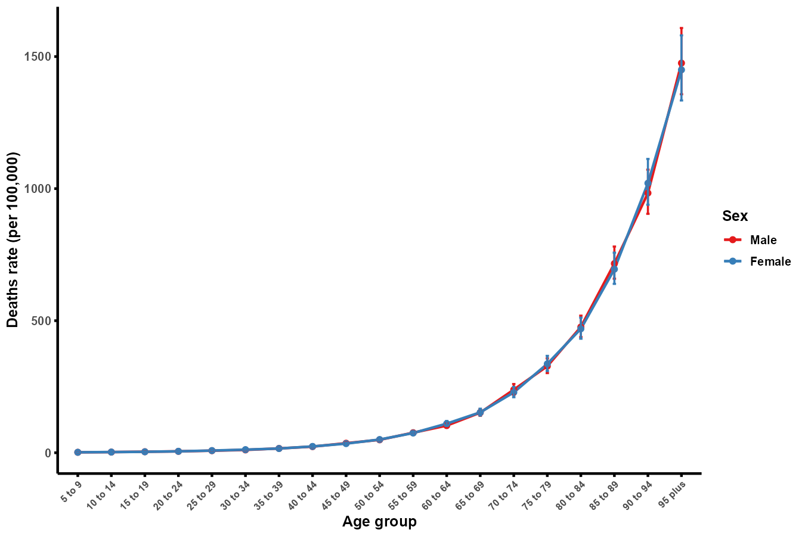
cause 而未加筛选时，同一横轴位置会叠加多个病种观测，折线呈锯齿状交替，图形不可解释。绘制前应对 cause 施加筛选。
5.2 c2.plotNumberRate：数量与率双轴图
左轴为绝对数量（柱形），右轴为率（折线），用于同时呈现负担规模与人群风险两个维度。数量随人口老龄化上升而率下降时，两轴走向相反，可直观反映人口结构效应。
c2.plotNumberRate(data, group = "sex", X_var = "year", scale_ratio = "auto",
groupcolor = "a", group_colors = NULL, CI = TRUE,
ylab_left = NULL, ylab_right = NULL, xlab = NULL,
linesize = 1, legend_title = NULL, x_breaks = NULL)d2 <- a3.GBDfilter(data = dat, measure = 3, sex = c("1", "2"),
age = c("1", "2"), location = 5, year = 1990:2023,
cause = "Ischemic heart disease")
c2.plotNumberRate(data = d2, group = "sex", X_var = "year",
legend_title = "Sex",
ylab_left = "Deaths", ylab_right = "ASMR (per 100,000)")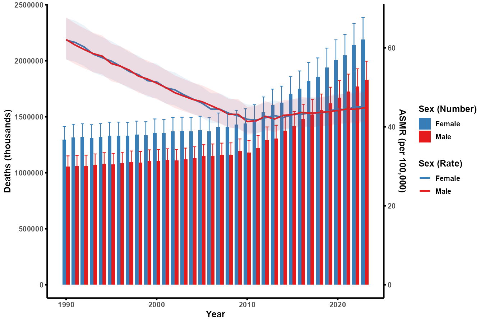
scale_ratio 控制折线与柱形的高度比例，取 "auto" 时按数据极值自动匹配；设为数值则在该基准上缩放，用于调整折线在视觉上的位置。
5.3 c3.plotPyramid：人口金字塔
以年龄为纵轴、性别为横向分组，男性取正值、女性取负值，用于比较各年龄段的性别负担差异。
c3.plotPyramid(data, group = "location", X_var = "age", measure = NULL,
location = NULL, age = NULL, rei = NULL, cause = NULL,
metric = NULL, year = NULL, color_scheme = "groupcolor1",
show_value = TRUE, value_size = 4, legend_size = 5)d3 <- a3.GBDfilter(data = dat, measure = 3, sex = c("1", "2"), age = 3,
location = 5, metric = 2, year = 2023,
cause = "Ischemic heart disease")
c3.plotPyramid(data = d3, group = "location", X_var = "age",
show_value = FALSE)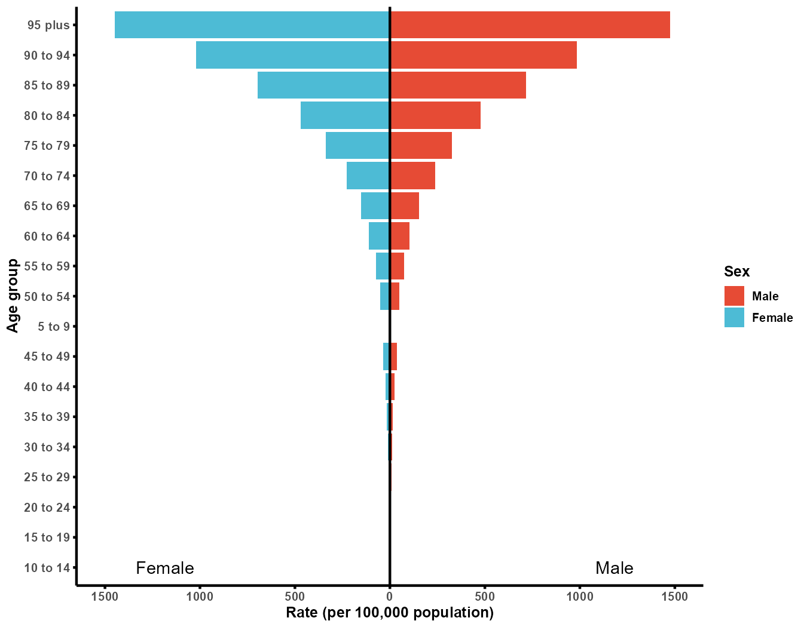
5.4 c4.modifyplot：图形修饰
对已生成的 ggplot 对象追加样式设置，涵盖标题、坐标轴、图例、配色、字体与边框。该函数返回新的图层叠加结果，不修改原始对象。
c4.modifyplot(p, title = NULL, xlab = NULL, ylab = NULL,
legend_title = NULL, legend_labels = NULL, xlim = NULL, ylim = NULL,
x_breaks = NULL, y_breaks = NULL, log_y = NULL,
theme_background = NULL, show_grid = NULL, panel_border = NULL,
font_family = NULL, line_size = NULL, show_CI = NULL,
legend_position = NULL, legend_direction = NULL,
x_angle = NULL, text_size = NULL, axis_line = NULL, ...)p <- c1.plotLine(data = d1, group = "sex", X_var = "age",
legend_title = "Sex", ylab = "Deaths rate (per 100,000)",
xlab = "Age group")
c4.modifyplot(p = p, title = "Age-specific mortality, Global, 2023",
legend_position = "top", legend_direction = "horizontal",
axis_line = TRUE, axis_line_sides = c("left", "bottom"),
x_angle = 45, text_size = 11)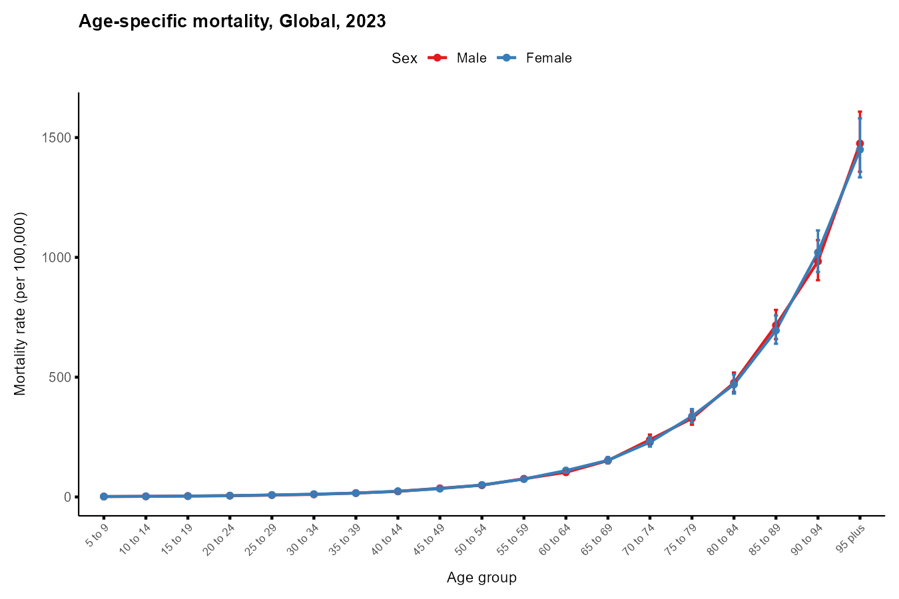
c4.modifyplot() 修饰后的图形。横轴标签旋转 45°，图例移至顶部并横向排列，轴线仅保留左侧与底部，标题居左。5.5 c5.plotBar：柱状图
与 c1.plotLine() 参数结构一致，输出形式为并列柱形，适用于年龄组数量较少或需要强调组间绝对差异的情形。
c5.plotBar(data, group = "sex", X_var = "age", groupcolor = "a",
group_colors = NULL, CI = TRUE, ci_style = "auto",
ci_linewidth = 0.8, ylab = NULL, xlab = NULL,
legend_title = NULL, x_breaks = NULL, metric_type = "Rate")c5.plotBar(data = d1, group = "sex", X_var = "age",
legend_title = "Sex", ylab = "Deaths rate (per 100,000)",
xlab = "Age group", metric_type = "Rate")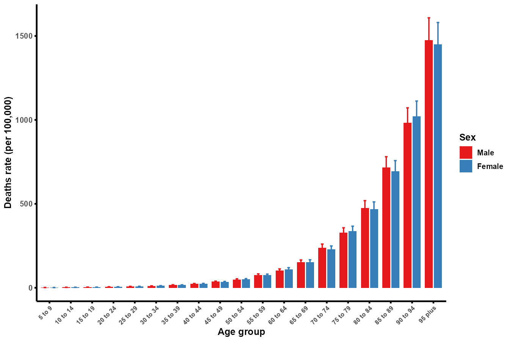
6地理分布制图
6.1 d1.Mapquantile：连续变量分位分组
将连续变量按分位数切分为等级因子，供离散色阶地图使用。分组边界由样本分位点确定，各组观测数近似相等。
d1.Mapquantile(data, n = 5, decimal_places = 2)dm <- mapd[mapd$year == 2023 & mapd$metric == "Rate", ]
dm$val2 <- d1.Mapquantile(data = dm$val, n = 5, decimal_places = 2)
levels(dm$val2)
# [1] "<26.4" "26.4 to <32.52" "32.52 to <36.6"
# [4] "36.6 to <41.69" "41.69 to <51.94"6.2 d2.Map：世界地图
依据变量类型自动选择连续或离散色阶，输出主图与小区域放大图。地图数据由包内 worldmap 矢量文件提供，地区名须与该文件一致。
d2.Map(data, variable, discrete_colors = NULL, color_group = "a",
continuous_colors = NULL, cont_color_group = "a",
legend_title = NULL, show_na = TRUE, show_small_map = TRUE,
longitude_min = NULL, longitude_max = NULL,
latitude_min = NULL, latitude_max = NULL)| 参数 | 说明 |
|---|---|
variable | 待映射的列名，字符串形式；连续或因子型均可 |
show_na | 是否将无数据国家以灰色显示 |
show_small_map | 是否附加加勒比、波斯湾、巴尔干等区域放大图 |
longitude_* / latitude_* | 裁剪范围，用于区域专题图 |
# 连续色阶
d2.Map(data = dm, variable = "val", legend_title = "ASMR (per 100,000)")
# 离散色阶（五分位）
d2.Map(data = dm, variable = "val2", legend_title = "ASMR quintile")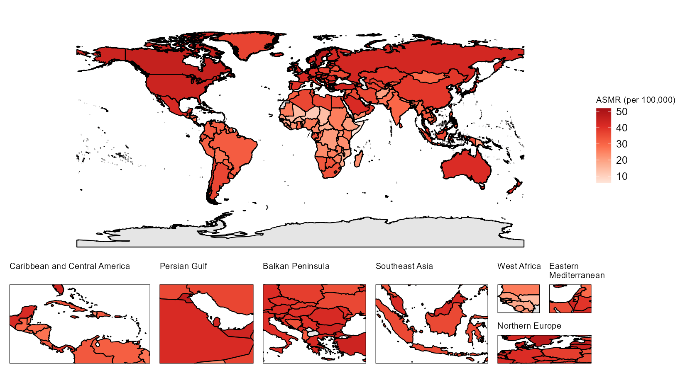
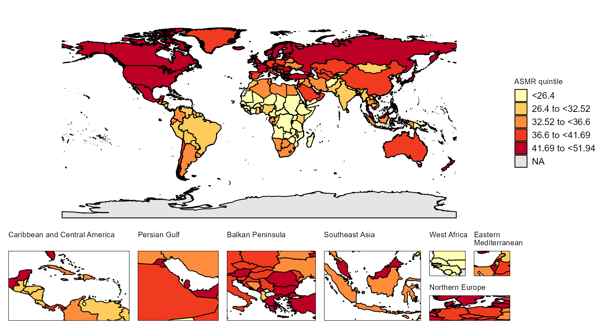
# 区域裁剪：东亚范围
d2.Map(data = dm, variable = "val", legend_title = "ASMR (per 100,000)",
longitude_min = 90, longitude_max = 150,
latitude_min = 10, latitude_max = 55)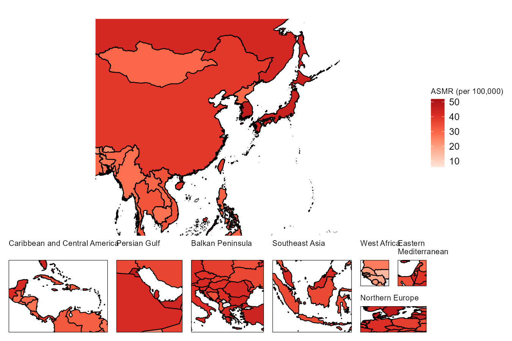
7年龄-时期-队列模型
年龄-时期-队列（Age-Period-Cohort, APC）模型将率的变化分解为年龄效应、时期效应与队列效应三部分，用于识别横断面趋势背后的结构性来源。模型存在年龄、时期、队列三者的线性依赖（时期 = 年龄 + 队列），需施加约束方可识别；本包的参考年龄与参考年份即用于设置该约束。
7.1 e1.APC：模型拟合
e1.APC(data, from_year = 1994, to_year = 2023,
referAge = NULL, referYear = NULL,
measure = NULL, location = NULL, sex = NULL,
rei = NULL, cause = NULL)| 参数 | 说明 |
|---|---|
data | 需含年龄组、年份与 val；cause、measure、location、sex、rei 须为唯一值，metric 取 Number |
from_year / to_year | 起止年份，须与数据年份连续对应；默认 1994—2023 |
referAge | 参考年龄段左端点，默认自动设定 |
referYear | 参考年份，默认自动设定 |
dapc <- a3.GBDfilter(data = dat, measure = 3, sex = 3, age = 3,
location = 5, metric = 1,
cause = "Ischemic heart disease")
r_apc <- e1.APC(data = dapc, from_year = 1994, to_year = 2023)
names(r_apc)
# [1] "NetDrift" "LocalDrifts" "LongAge" "PeriodRR" "CohortRR"返回值是列表，五个元素分别对应净漂移、局部漂移、年龄纵向曲线、时期相对风险与队列相对风险。后续 e2.plotAPC()、l1.GBDsave() 均以该列表为输入。
7.2 e2.plotAPC：效应曲线
e2.plotAPC(data, type = "All", CI = TRUE, group_name = NULL,
line_size = 1, measure = NULL, location = NULL,
sex = NULL, rei = NULL, cause = NULL)type 可取 "LongAge"（1）、"Cohort"（2）、"Period"（3）、"Drift"（4）与 "All"（5），数字与字符串两种写法等价。
e2.plotAPC(data = r_apc, type = 1) # 年龄纵向曲线
e2.plotAPC(data = r_apc, type = 4) # 局部漂移与净漂移
e2.plotAPC(data = r_apc, type = 5) # 四图拼合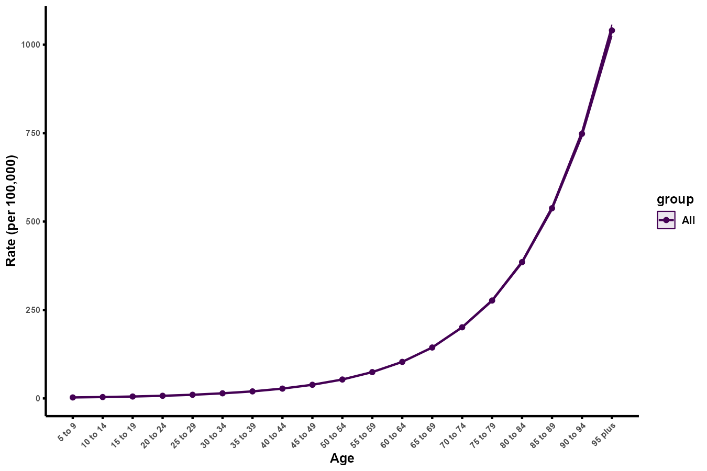
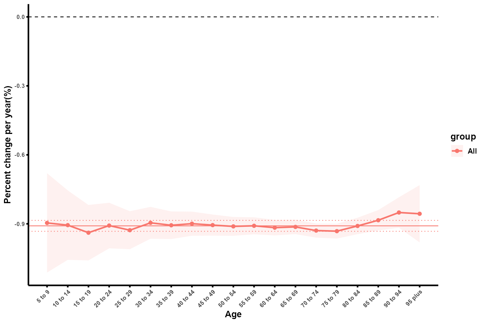
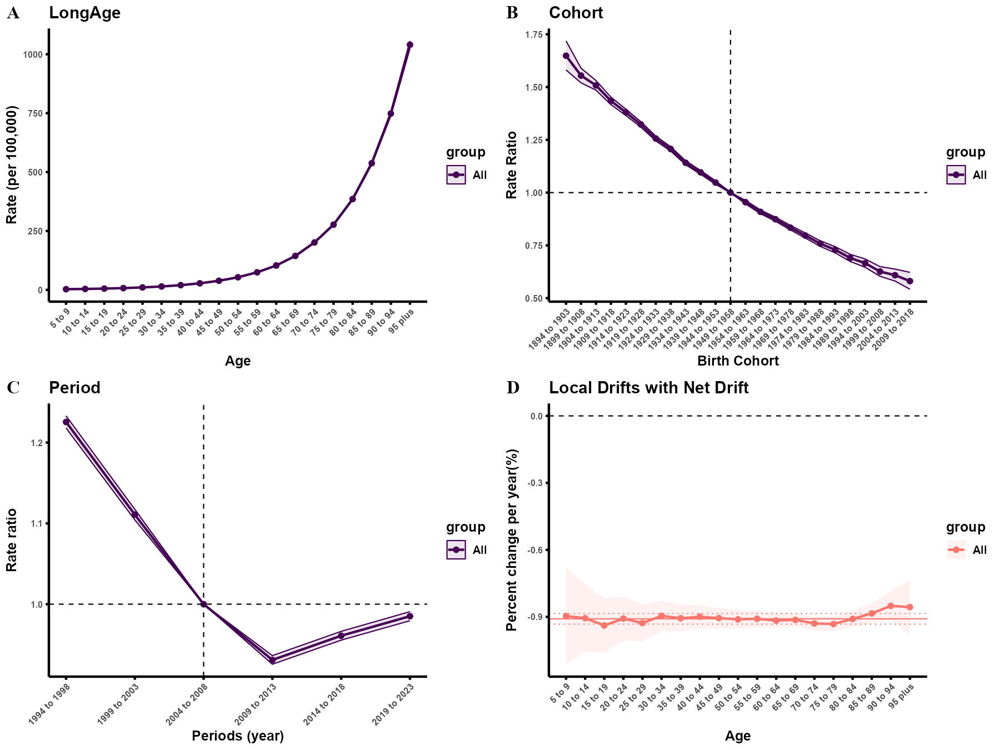
type = "All" 输出的 2×2 拼合图，含年龄纵向曲线（A）、队列相对风险（B）、时期相对风险（C）与局部漂移（D）。C 图在 2010 年前后出现折点，与第 8 章 Joinpoint 识别的转折年份一致。8Joinpoint 回归
Joinpoint 回归以分段对数线性模型拟合率的时间序列，通过网格搜索与置换检验确定转折点数量与位置，输出各段的年度变化百分比（APC）及全区间平均年度变化百分比（AAPC）。该方法不预设趋势形态，适用于存在政策干预或筛查普及等结构性变化的情形。
8.1 f1.Joinpoint：转折点估计
f1.Joinpoint(data, ASR = TRUE, metric = "Rate",
from_year = 1990, to_year = 2023,
model = "ln", joinpoints = 5, rei = FALSE,
CI = TRUE, decimal_places = 2, ci_connector = " to ")| 参数 | 说明 |
|---|---|
ASR | TRUE 仅使用 age = Age-standardized 的行；FALSE 使用具体年龄组 |
model | 拟合模型族，"ln"（对数线性）最常用，另有 "identity"、"loglog" |
joinpoints | 允许的最大转折点数，默认 5；点数越多计算量越大 |
from_year / to_year | 起止年份，须连续且与数据一致 |
djp <- a3.GBDfilter(data = dat, measure = 3, sex = 3, age = 1,
location = c("4", "5"), metric = 2,
cause = "Ischemic heart disease", year = 1990:2023)
r_jp <- f1.Joinpoint(data = djp, ASR = TRUE, metric = "Rate",
from_year = 1990, to_year = 2023)
r_jp$AAPC[, c("location", "AAPC", "AAPC_LCI", "AAPC_UCI", "P.Value")]
# location AAPC AAPC_LCI AAPC_UCI P.Value
# 1 China -0.9863 -1.0069 -0.9659 0
# 7 Global -1.0093 -1.0290 -0.9897 0返回列表含 AAPC、AAPC_Range、APC、data 与 label。APC 给出每一分段的斜率与区间，可将转折年份与政策事件对应解读。
8.2 f2.plotJoinpoint：单组拟合图
f2.plotJoinpoint(data, measure = NULL, location = NULL, sex = NULL,
age = NULL, rei = NULL, cause = NULL, metric = NULL,
text_shift_y = 0, facet_expr = NULL,
point_color = "darkred", joinpointtext = TRUE,
joinpointtext_color = "darkred", line_size = 1)f2.plotJoinpoint(data = r_jp,
facet_expr = "ASMR of ischaemic heart disease",
point_color = c("darkred", "darkred"))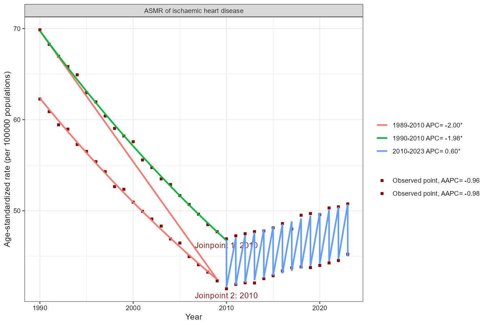
point_color 需提供不少于散点类别数的颜色。默认单色在存在两个及以上类别时触发错误 Insufficient values in manual scale，此时改为长度 ≥2 的向量即可。
8.3 f3.plotJoinpoint2：多组拟合图
在同一坐标系中比较多个分组（地区、性别等）的拟合曲线，用颜色与点形区分分组。
f3.plotJoinpoint2(data, group_name = "location", measure = NULL, ...,
text_shift_y = -0.01, facet_expr = NULL,
color_group = c("#E41A1C", "#377EB8", ...),
shape_group = c(13, 14, 15, 16, 17, 18),
joinpointtext = TRUE, line_size = 1)f3.plotJoinpoint2(data = r_jp, group_name = "location",
color_group = c("#E41A1C", "#377EB8"),
shape_group = c(16, 17),
facet_expr = "ASMR (per 100,000)")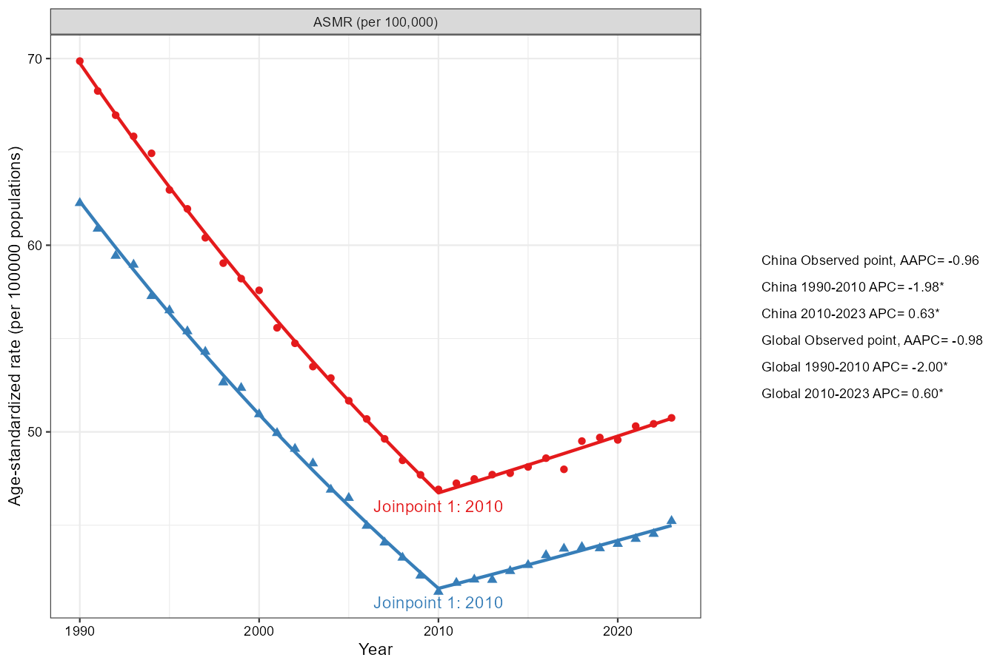
f2.plotJoinpoint()。
9疾病负担分解
分解分析将两个时点间绝对负担的差值，拆分为人口规模、人口年龄结构与流行病学变化（年龄别率）三项贡献。采用 Das Gupta 分解法，三项贡献之和等于总变化。
9.1 g1.decomposition：三因素分解
g1.decomposition(data, year_base = 1990, year_compare = 2023,
from_age = 0, to_age = 95)ddec <- a3.GBDfilter(data = dat, measure = 3, age = 3,
location = c("4", "5"),
cause = "Ischemic heart disease",
year = c(1990, 2023))
r_dec <- g1.decomposition(data = ddec, year_base = 1990, year_compare = 2023,
from_age = 5, to_age = 95)
r_dec[, c("location", "sex", "Aging", "Population",
"Epidemiological change", "percent change of Aging")]
# location sex Aging Population Epidemiological change percent change of Aging
# 1 China Male 297419 94372 -134208 115.5
# 2 China Female 335589 110992 -146910 112.0
# 3 China Both 632707 205301 -274088 112.2
# 4 Global Male 614635 646231 -485097 79.2
# 5 Global Female 679454 789414 -574766 76.0
# 6 Global Both 1302366 1442213 -1052815 77.0以中国两性合并为例：1990—2023 年死亡数净增约 56.4 万，其中人口老龄化贡献 +63.3 万（占总变化 112.2%）、人口规模增长贡献 +20.5 万（36.4%）、流行病学变化贡献 −27.4 万（−48.6%）。三项之和等于总变化量，负值表示该因素起到抵消作用。
metric 同时包含 Number 与 Rate。缺失任一条件将返回「数据中没有各个年龄段的 Number 数据」或「没有用 from_age、to_age 形成的所有数据」的提示。
9.2 g2.plotDecom：分解结果图示
g2.plotDecom(data, group_name = NULL, measure = NULL, location = NULL,
sex = NULL, rei = NULL, cause = NULL,
point_size = 3, point_color = "black", color_scheme = "a")g2.plotDecom(data = r_dec, group_name = "sex")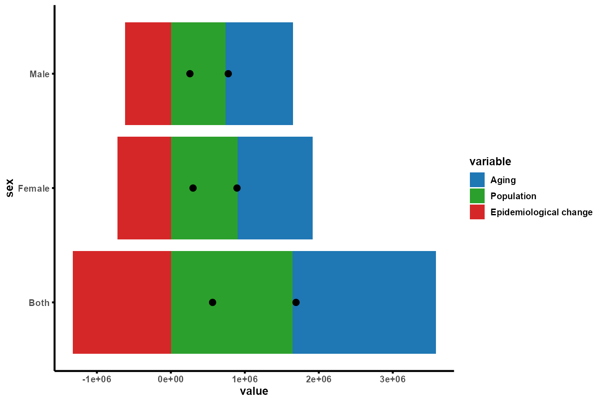
10趋势预测
10.1 h1.GBDBAPC：贝叶斯年龄-时期-队列预测
以贝叶斯 APC 模型对年龄别率建模，结合未来人口预测得到绝对数量的外推结果。该方法以先验约束平滑年龄、时期与队列效应，适用于长期预测。
h1.GBDBAPC(data, CompletedAge = TRUE, measure = NULL, location = NULL,
rei = NULL, cause = NULL, CheckSex = TRUE, byyear = 2036)| 参数 | 说明 |
|---|---|
CompletedAge | 数据含完整年龄组（0–95+）时为 TRUE；仅含部分年龄段时为 FALSE |
CheckSex | TRUE 分别建模男性与女性；FALSE 仅建模两性合并 |
byyear | 预测终止年份 |
d_bapc <- a3.GBDfilter(data = dat, measure = 3, age = c("3", "1", "2"),
location = 5, year = 1990:2023,
cause = "Ischemic heart disease")
r_bapc <- h1.GBDBAPC(data = d_bapc, CheckSex = FALSE, byyear = 2036)
names(r_bapc)
# [1] "all_age_projection" "crude_rate" "ASR"
# [4] "Age_standardized_projection" "age_specific_rate" "age_specific_projection"INLA 与 BAPC 两个包，二者均不在 CRAN 主干仓库。单次建模耗时较长，建议仅对一个维度（如性别）运行。若环境不具备上述依赖，可改用本章第 4 节的 ARIMA 方案。
10.2 h2.plotPredASR 与 h3.plotPredNumberASR
两者均以 h1.GBDBAPC() 的返回列表为输入：前者绘制年龄标化率的预测曲线，后者绘制数量与率的双轴预测图。
h2.plotPredASR(data, CI = TRUE, pred_year_start = 2024, group_name = NULL,
measure = NULL, location = NULL, sex = NULL, ...)
h3.plotPredNumberASR(data, scale_ratio = "auto", CI = TRUE,
pred_year_start = 2024, group_name = NULL, ...)h2.plotPredASR(data = r_bapc, group_name = "sex")
h3.plotPredNumberASR(data = r_bapc, CI = FALSE, group_name = "sex")pred_year_start 用于区分观测期与预测期，早于该年份的曲线以实线表示，之后为虚线或阴影区间。
10.3 h4.GBDARIMA：ARIMA 预测
对各维度组合分别拟合 ARIMA 模型并外推，输出观测期与预测期合并数据。该方法仅依赖时间序列自身结构，不引入人口预测，适用于短期外推与敏感性分析。
h4.GBDARIMA(data, measure = NULL, location = NULL, sex = NULL, age = NULL,
cause = NULL, rei = NULL, metric = NULL, byyear = 27)dar <- dat[dat$measure == "Deaths" & dat$age == "Age-standardized" &
dat$metric == "Rate" & dat$location %in% c("China", "Global") &
dat$cause == "Ischemic heart disease" & dat$sex == "Both", ]
r_ari <- h4.GBDARIMA(data = dar, byyear = 8)
r_ari$total_models
# [1] 2
nrow(r_ari$forecast_data)
# [1] 16| 返回元素 | 内容 |
|---|---|
combined_data | 观测期与预测期合并数据 |
forecast_data | 仅预测期数据，含区间上下限 |
historical_data | 仅观测期数据 |
model_summary | 各组的模型阶数与拟合指标 |
dimension_combinations | 实际参与建模的维度组合 |
10.4 h5.plotARIMA：预测曲线
h5.plotARIMA(data, measure = NULL, location = NULL, sex = NULL, age = NULL,
cause = NULL, rei = NULL, metric = NULL, group_by = NULL,
color_scheme = "a", custom_colors = NULL,
xlab = "Year", ylab = "Value",
show_confidence = TRUE, linesize = 1.2)h5.plotARIMA(data = r_ari, group_by = "location",
ylab = "ASMR (per 100,000)")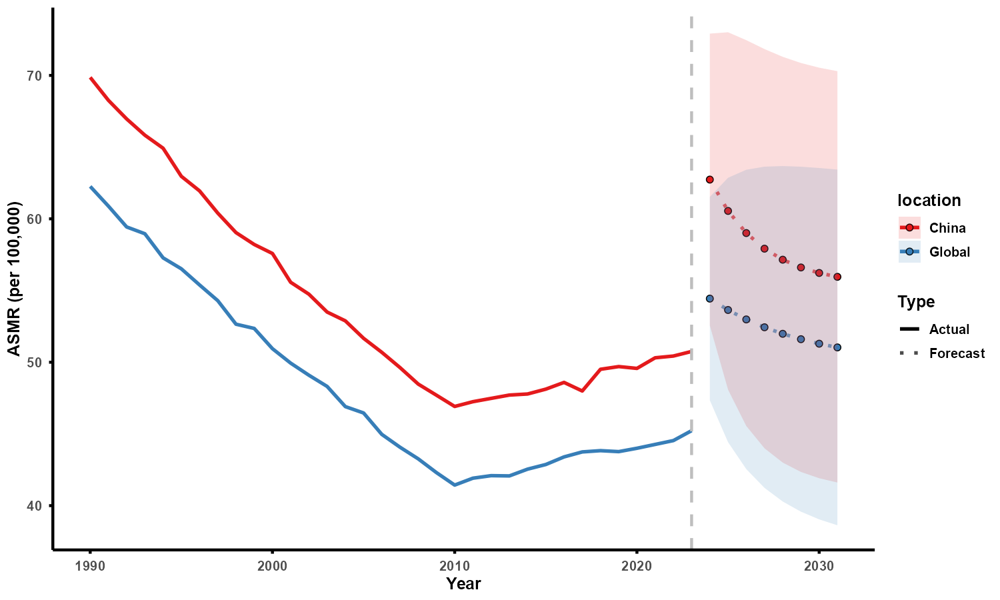
11前沿分析
前沿分析以社会发展指数（SDI）为横轴、疾病负担率为纵轴，拟合可达最低负担的边界曲线。某国家实际率与同 SDI 水平前沿值之差定义为效率差（effective difference），用于衡量在既有社会经济条件下可改进的空间。
11.1 i1.Frontier：前沿估计
i1.Frontier(data, measure = NULL, sex = NULL, age = NULL,
rei = NULL, cause = NULL, bootstrap = 100)fmap <- mapd[mapd$metric == "Rate", ]
r_fr <- i1.Frontier(data = fmap, bootstrap = 20)
names(r_fr)
# [1] "location" "year" "Rate" "SDI" "frontier" "eff_diff" "Rate_minyear" "trend"返回列为国家、年份、实测率、SDI、前沿值、效率差、历史最低率及其趋势。bootstrap 为重抽样次数，用于估计前沿的不确定性，取值越大结果越稳定而耗时越长。
11.2 i2.plotFrontier：前沿图
i2.plotFrontier(data, span = 0.2, type = 1)i2.plotFrontier(data = r_fr, type = 1) # 仅最新年份
i2.plotFrontier(data = r_fr, type = 2) # 全部年份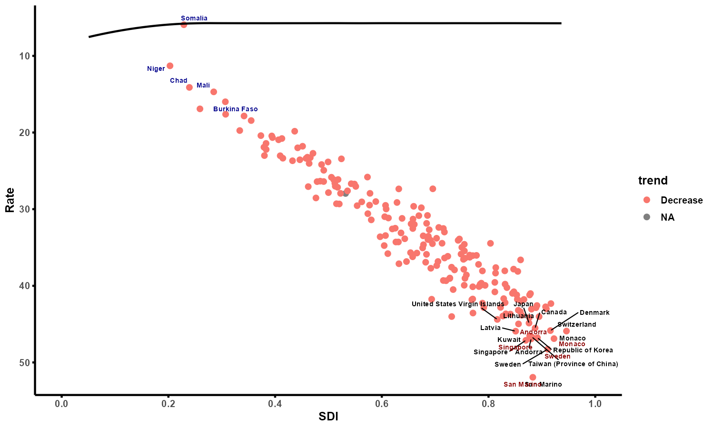
span 为 LOESS 平滑参数，控制前沿曲线的平滑程度；散点越接近前沿，可改进空间越小。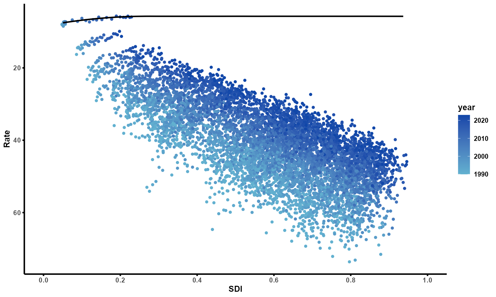
12健康不平等
健康不平等测度以 SDI 对 204 个国家排序，计算负担在人群分布中的集中程度。斜率指数（Slope Index of Inequality, SII）为率对相对位次的回归斜率，反映最高与最低 SDI 端的绝对差；集中指数（Concentration Index, CI）为相对差异的归一化度量，取值 −1 至 1。
12.1 j1.GBDInequality：指数计算
j1.GBDInequality(data, type = "CI", metric_name = "Rate",
CompletedAge = NULL, B = 1000)| 参数 | 说明 |
|---|---|
type | "SII" 计算斜率指数；"CI" 计算集中指数 |
metric_name | 参与计算的度量，通常取 Rate |
CompletedAge | 年龄向量或 NULL；取 c(25, 45) 表示按 25–49 岁口径解释已标化结果 |
B | bootstrap 次数，仅 type = "CI" 时生效，用于估计标准误与 P 值 |
fmap <- mapd[mapd$metric == "Rate" & mapd$year %in% c(1990, 2023), ]
r_sii <- j1.GBDInequality(data = fmap, type = "SII")
r_sii$SlopeIndexofInequality
# year lm lm_lower lm_upper ncvTest_p rlm rlm_lower rlm_upper
# 1 1990 32.51 30.02 35.00 0.0340 32.37 29.94 34.80
# 2 2023 22.99 21.65 24.32 0.0040 22.47 21.22 23.72
r_ci <- j1.GBDInequality(data = fmap, type = "CI", B = 50)
r_ci$ConcentrationIndex
# year Concentration.index SE lci uci p
# 1 1990 0.108 0.0284 0.0611 0.1505 0
# 2 2023 0.118 0.0241 0.0826 0.1714 0SII 由 1990 年的 32.51 降至 2023 年的 22.99，绝对不平等程度收窄；同期 CI 由 0.108 微升至 0.118，相对不平等略有扩大。两项指标方向不一致，源于率整体下降导致同样的绝对差对应更大的相对差，报告中需同时列示。
ncvTest_p 为异方差检验 P 值，取值小于 0.05 时普通最小二乘估计的方差不再可靠，应以稳健回归（rlm）结果为主。
12.2 j2.SIIplot 与 j3.CIplot：不平等曲线
j2.SIIplot(data, type = "rlm", color_scheme = "b", measure = NULL,
age = NULL, sex = NULL, rei = NULL, cause = NULL,
year = c(1990, 2023))
j3.CIplot(data, type = "smooth", color_scheme = "c", measure = NULL,
sex = NULL, cause = NULL, rei = NULL, age = NULL,
year = c(1990, 2023))j2.SIIplot(data = r_sii, year = c(1990, 2023))
j3.CIplot(data = r_ci, year = c(1990, 2023))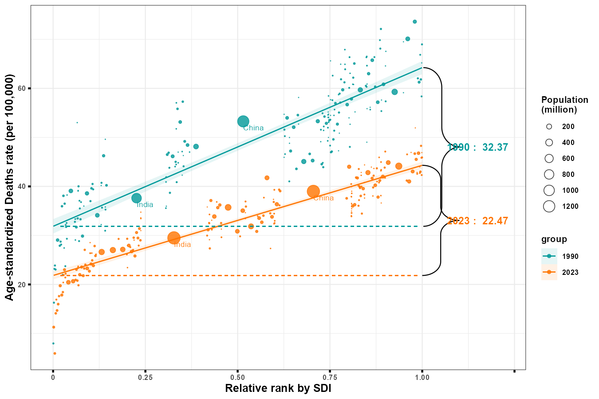
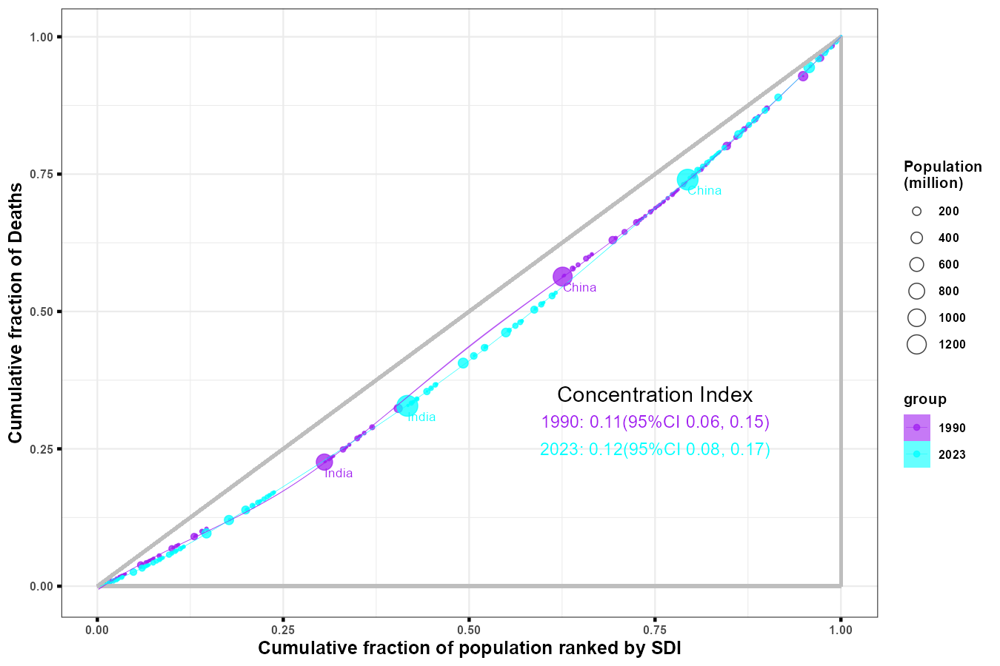
type = "smooth" 采用 GAM 平滑，"line" 为折线连接。13SDI 与风险因素
13.1 k1.plotSDIASR：SDI 与疾病负担的关联
以 SDI 为横轴、标化率为纵轴绘制散点并拟合 LOESS 曲线，标注相关系数与 P 值，用于判断负担与社会经济发展水平的关系形态（线性或阈值型）。
k1.plotSDIASR(data, span_val = 0.5, show_se = FALSE, show_pvalue = TRUE,
highlight_location = NULL, highlight_color = NULL,
standard = NULL, method = "spearman", fig_type = 1)| 参数 | 说明 |
|---|---|
fig_type | 2 绘制单一年份截面；1 绘制多年序列 |
method | 相关系数类型，可选 "spearman"、"pearson"、"kendall" |
highlight_location | 需高亮的国家名称，配合 highlight_color 命名向量使用 |
standard | 数据同时含 Age-standardized 与 All ages 时须显式指定 |
f23 <- mapd[mapd$metric == "Rate" & mapd$year == 2023, ]
k1.plotSDIASR(data = f23, fig_type = 2,
highlight_location = "China",
highlight_color = c("China" = "red"))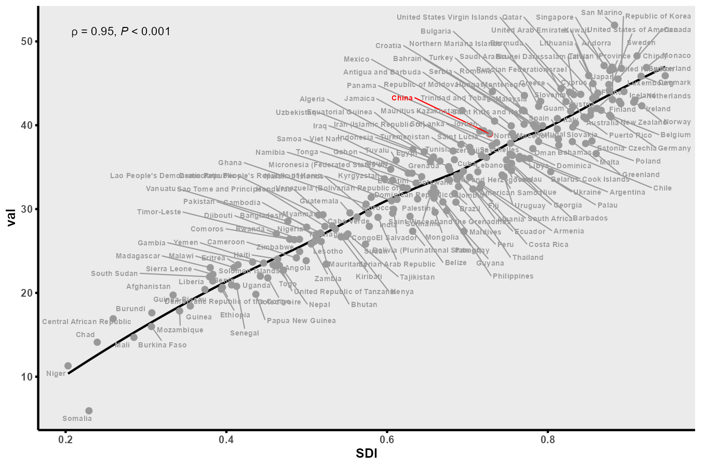
13.2 k2.plotHeatRisk：风险因素归因分数热图
以风险因素为纵轴、地区为横轴，颜色表示人群归因分数（PAF）的百分比，用于横向比较各风险因素在不同地区的相对重要性。
k2.plotHeatRisk(data, measure = NULL, sex = NULL, age = NULL,
cause = NULL, metric = NULL, year = NULL,
sort_location = NULL,
legend_name = "Population attributable\nfractions (%)",
palette = "a", colors_custom = NULL)k2.plotHeatRisk(data = risk, year = 2023, sort_location = "China")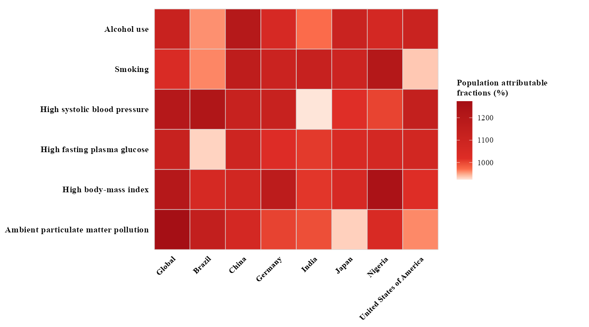
13.3 k3.plotRankRisk：风险因素排名变化
以哑铃图呈现两个年份的排名对比，连线形态表示排名升降，用于识别权重上升或下降的风险因素。
k3.plotRankRisk(data, measure = NULL, location = NULL, sex = NULL,
age = NULL, cause = NULL, metric = NULL,
years = c(1990, 2023), palette = "a",
risk_colors = NULL, text_size = 4)k3.plotRankRisk(data = risk, years = c(1990, 2023))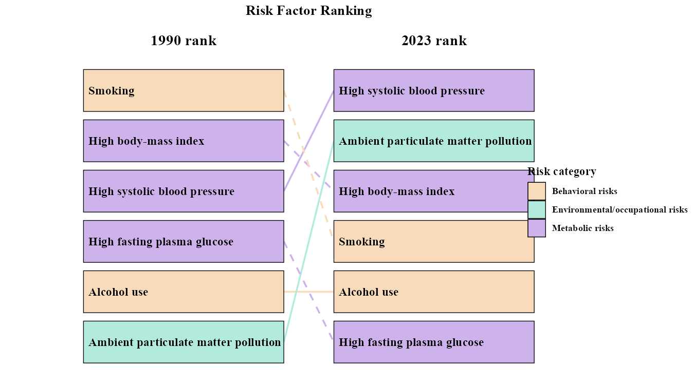
13.4 k4.plotHeatRank：地区内部排名热图
在各地区内部对风险因素单独排名，并按 Top1、Top3、Top7 等区间着色，用于识别地区特异性主导风险。
k4.plotHeatRank(data, measure = NULL, sex = NULL, age = NULL, cause = NULL,
metric = NULL, year = NULL, sort_location = NULL,
legend_name = "Rank Group", palette = "a",
colors_custom = NULL, label_size = 2.5)k4.plotHeatRank(data = risk, year = 2023, sort_location = "Global")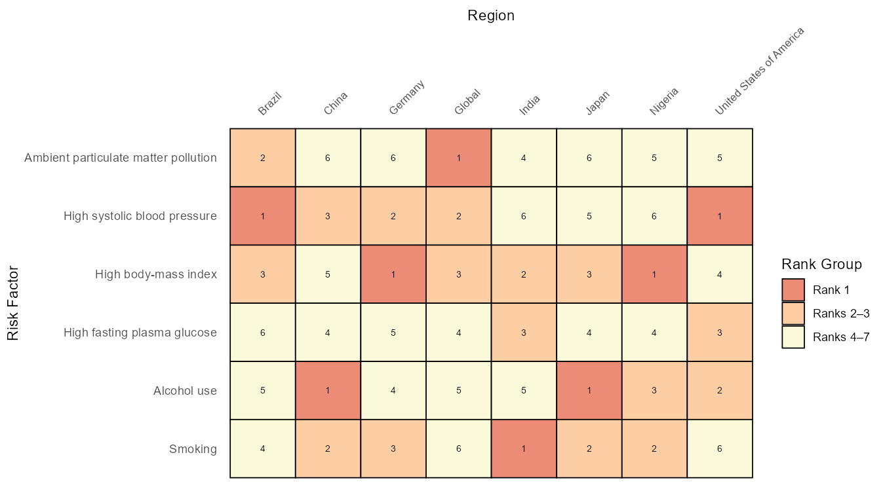
14质量照护指数
质量照护指数（Quality of Care Index, QCI）由四个比值指标经主成分分析合成：死亡率与发病率之比（MIR）、 years of life lost 与 years lived with disability 之比（YLR）、DALY 与患病率之比（DPR）、患病率与发病率之比（PIR）。指数归一化至 0–100，数值越高表示在既定发病水平下的结局转归越好。
m1.GBDQCI(data)输入数据须满足两项条件：metric 含 "Rate"；同一 cause-age-sex-location-year 分组下同时具备 Incidence、Prevalence、Deaths、DALYs、YLDs、YLLs 六类 measure。
r_qci <- m1.GBDQCI(data = qci_data)
head(r_qci[, c("location", "year", "MIR", "YLR", "DPR", "PIR", "QCI")])
# location year MIR YLR DPR PIR QCI
# 1 China 1990 0.336 5.302 0.572 11.55 0.00
# 2 China 2005 0.284 5.894 0.579 10.21 100.00
# 3 China 2023 0.294 5.660 0.620 10.50 76.40
# 4 Global 1990 0.338 5.895 0.618 11.47 25.93
# 5 Global 2005 0.327 5.899 0.656 10.42 68.78
# 6 Global 2023 0.325 6.202 0.602 10.84 66.09| 输出列 | 含义 |
|---|---|
MIR | 死亡率 / 发病率，越小表示发病后致死比例越低 |
YLR | YLLs / YLDs，越小表示负担中早死占比越低 |
DPR | DALYs / 患病率，反映单位患病人群的失能损失 |
PIR | 患病率 / 发病率，反映病程长度 |
QCI | 合成指数，0–100，越高表示照护质量越好 |
示例结果显示，中国由 1990 年的 0 升至 2023 年的 76.40，全球由 25.93 升至 66.09。QCI 为组内相对位置，跨组比较时应结合原始比值判读，不宜单独使用。
15结果导出
l1.GBDsave() 依据分析类型将结果写入 CSV，文件写至当前工作目录。3.x 版本提供该函数，按 type 决定从输入对象中提取哪些数据框。
l1.GBDsave(data, type = c("EAPC", "ASR", "APC", "Joinpoint",
"Decomposition", "BAPC"),
filename_prefix = "result")| type | 输入对象 | 输出文件 |
|---|---|---|
"EAPC" | 单表 | <prefix>_EAPC.csv |
"ASR" | 单表 | <prefix>_ASR.csv |
"APC" | e1.APC 列表 | NetDrift、LocalDrifts、CohortRR、LongAge、PeriodRR 各一个 CSV |
"Joinpoint" | f1.Joinpoint 列表 | AAPC 与 APC 两个 CSV |
"Decomposition" | 单表 | <prefix>_Decomposition.csv |
"BAPC" | h1.GBDBAPC 列表 | 列表中全部数据框各一个 CSV |
l1.GBDsave(data = r3, type = "EAPC", filename_prefix = "China_EAPC")
l1.GBDsave(data = r_jp, type = "Joinpoint", filename_prefix = "China_JP")
l1.GBDsave(data = r_dec, type = "Decomposition", filename_prefix = "China_Dec")文件命名规则为 paste0(filename_prefix, "_", 元素名, ".csv")，前缀中不宜包含路径分隔符以外的特殊字符。函数无返回值，仅以副作用形式写盘。
16常见问题
16.1 加载阶段失败
若 library(ZtGBD) 报「there is no package called 'X'」，说明声明依赖未安装完整。依赖检查应基于 DESCRIPTION 的 Imports 字段而非逐个试错：读取包描述文件后与 installed.packages() 取差集，可一次性列出全部缺失项。
若报「未授权」而授权码无误，需确认授权校验接口的可达性。该接口为联网校验，服务不可用时返回 HTTP错误: 500，此时任何有效授权码均无法通过，与本地文件无关。
16.2 筛选结果与预期不符
a1.GBDread() 返回 data.table，而 a3.GBDfilter() 的筛选依据列名与参数名的解析顺序。参数名与列名同名时，data.table 优先解释为列引用，条件退化为恒真，函数返回全量数据且不报错。转换 data.frame 后调用可避免该问题。
16.3 统计函数拒绝执行
| 提示 | 原因与处理 |
|---|---|
| 本函数不适用于含有 rei 的数据 | b1.ASR() 仅判断列是否存在，不判断是否全为 NA。删除 rei 列或改用 b2.ASRrei() |
| 没有各个年龄段的 Number 数据 | g1.decomposition() 需 Number 与 Rate 并存，且两侧年份的年龄组完整 |
| Elements "Number 1990 (95% UI)" don't exist | b4.GBDtable() 缺 All ages 的数量行，筛选中不应排除 age = 2 |
| 数据中没有转折点，无法进行 apc 的绘制 | 序列单调，Joinpoint 未识别出转折；改用 f2.plotJoinpoint() |
16.4 图形渲染异常
若 ggsave() 报 Insufficient values in manual scale，说明手动色阶提供的颜色数少于分组数，应补充颜色向量。若报 could not find function "bdiag" 或 "bandSparse"，为 Matrix 包未加载所致，在会话中执行 library(Matrix) 即可。
若图形中文标签显示为乱码，需在绘图前设置支持中文的字体族，或将标签改为英文。Windows 平台可使用 windowsFonts() 注册系统字体后在 c4.modifyplot(font_family = ...) 中调用。
16.5 Joinpoint 执行失败
该函数调用外部可执行程序，失败多与路径有关：当前工作目录含中文字符、目录不可写、或系统阻止可执行文件运行。将工作目录设为纯英文路径，并确认 jpCommand.exe 可被复制到该目录，即可排除多数问题。